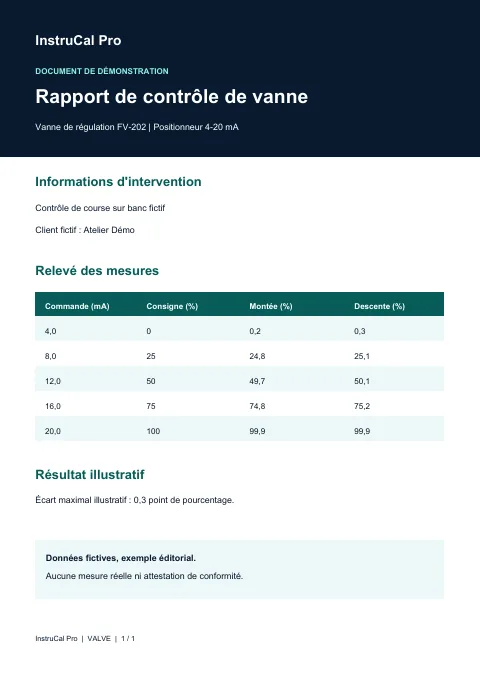
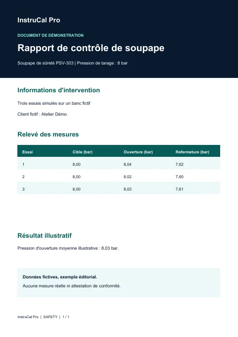

Vérifiez la mesure
Passez du 4–20 mA à la valeur process et comparez vos relevés à la référence.
Instrumentation industrielle · Android
Convertissez des signaux, documentez vos contrôles et partagez vos certificats PDF avec une application Android conçue pour les professionnels de terrain.
Passez du 4–20 mA à la valeur process et comparez vos relevés à la référence.
Rassemblez mesures, photos et signature dans le dossier de l’intervention.
Recherchez un certificat dans l’historique local et partagez le PDF avec le client ou le service qualité.
Pour les techniciens instrumentation, prestataires de métrologie, laboratoires et équipes de maintenance.
Passez du courant de boucle à la valeur process et inversement. Consultez les outils RTD/Pt100, thermocouples, pression, température et débit.

Saisir la plage et le signal · convertir · vérifier la valeur attendue
Free et Pro · illimité
Découvrir sur Google PlaySaisissez les mesures de terrain, comparez-les aux références et partagez un PDF rapide.

Choisir la plage · renseigner les points · générer le PDF
Free · 5 PDF rapides. Pro · illimité.
Découvrir sur Google PlayRassemblez les informations du client, de l’instrument et de l’étalon avec les mesures, les écarts et la conclusion. Partagez le PDF ou exportez les données vers Excel.

Renseigner l’étalon · saisir les mesures · exporter
Free · 1 certificat complet. Pro · illimité avec logo d’entreprise.
Découvrir sur Google PlayRelevez la position de la vanne à différents points de commande. Documentez les écarts et conservez le rapport d’intervention.
Choisir la vanne · relever les positions · partager le rapport
Free · 1 contrôle complet. Pro · illimité.
Découvrir sur Google PlayModifiez la consigne et les paramètres de régulation pour observer la réponse simulée et comparer des scénarios. Les courbes servent au diagnostic et à la formation.
Configurer le scénario · simuler · lire les courbes
Réservé à Pro
Découvrir sur Google PlayDocumentez les pressions d’ouverture et de refermeture et regroupez les essais dans un rapport.
Définir la pression de tarage · relever les essais · générer le rapport
Free · 1 tarage complet. Pro · illimité.
Découvrir sur Google PlayRetrouvez les interventions et certificats enregistrés sur l’appareil. Ouvrez une fiche instrument à partir de son QR code.

Ouvrir la fiche · retrouver un certificat · le partager
Historique local · les quotas de création dépendent de l’offre
Découvrir sur Google PlayAjoutez des photos et une signature au certificat complet, ouvrez une fiche instrument via son QR et partagez le PDF généré.

Joindre les éléments · signer · prévisualiser le PDF
Free · selon le quota du document. Pro · logo d’entreprise sur le certificat complet.
Découvrir sur Google PlayLes captures proviennent de la fiche Google Play. Certains écrans peuvent différer de la version installée.
Passez du courant de boucle à la valeur process et inversement. Consultez les outils RTD/Pt100, thermocouples, pression, température et débit.
Capture officielle à ajouter pour ce module.
Consultez deux exports anonymisés générés par InstruCal Pro et deux rapports illustratifs.

Export InstruCal Pro · PDF en français
Transmetteur de pression 4–20 mA, avec mesures, écarts et tolérance.

Export InstruCal Pro · PDF en français
Transmetteur de température, étalon de référence et mesures en montée et en descente.

Document de démonstration
Vanne de régulation, signal de commande et course mesurée.

Document de démonstration
Pressions d’ouverture et de refermeture sur trois essais.
Commencez gratuitement. Consultez l’offre Pro dans l’écran « Mon plan » de l’application.
Gratuit à installer
Tarif affiché dans l’application
L’achat Pro s’effectue dans l’application Android via Google Play. La fiche Google Play annonce un essai de 7 jours. Vérifiez l’offre et l’éligibilité affichées dans l’application avant de souscrire.
Voir l’application sur Google PlayLa fiche publique indique Android 7.0 ou ultérieur pour la version 1.1.0. Le site se consulte aussi sur iPhone et ordinateur.
Les convertisseurs et les étalonnages rapides locaux sont illimités. Free comprend 5 PDF rapides, 1 certificat complet, 1 étalonnage de vanne et 1 tarage de soupape.
Ouvrez l’écran Mon plan dans l’application pour consulter l’offre affichée par Google Play. La fiche annonce un essai de 7 jours. Google Play affiche l’éligibilité, le tarif et les conditions applicables à votre compte avant confirmation.
L’historique est conservé sur l’appareil. Vous pouvez partager les PDF et exporter les données du certificat complet vers Excel depuis l’application.
Les deux exports anonymisés montrent le rendu de l’application. Les rapports de vanne et de soupape utilisent des données fictives. Toute revendication d’accréditation dépend de l’organisme qui effectue l’étalonnage et de sa portée.
Disponible sur Android. Démarrez avec Free et consultez Pro dans l’application.